【CS游戏破解】『无限子弹无限钱无限血』
1.启动CS游戏
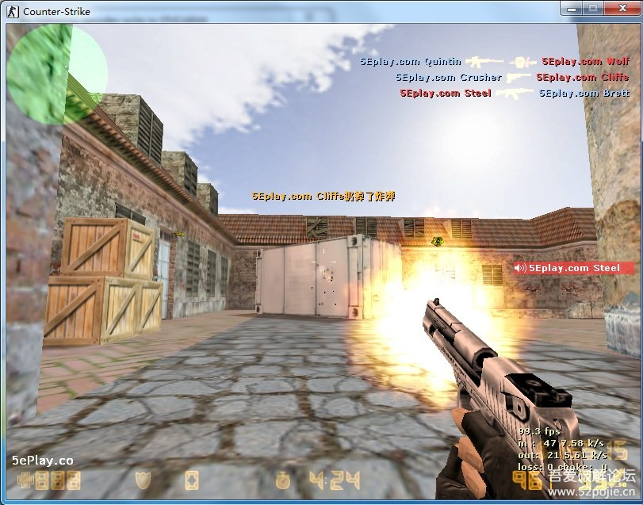
2.设置窗口模式,方便调试,分辨率根据自己喜欢设置
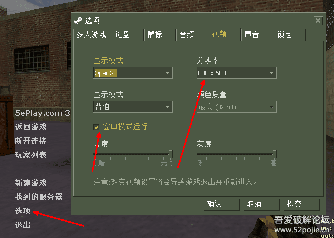
3.打开CE,选取需要破的程序
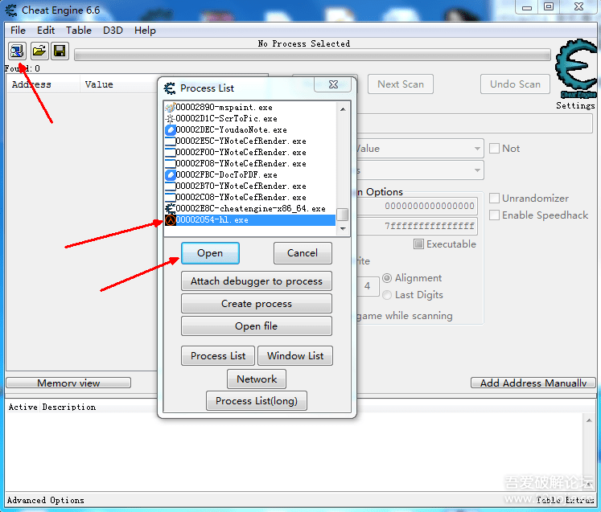
4.CE附加完毕
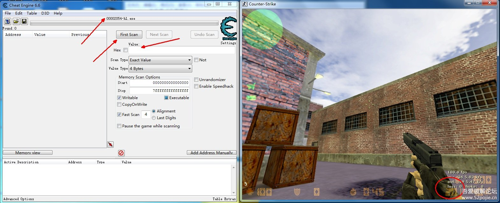
5.我们现在要追踪游戏上显示的子弹数"20",我们就在CE的值(Value)里写入"20"
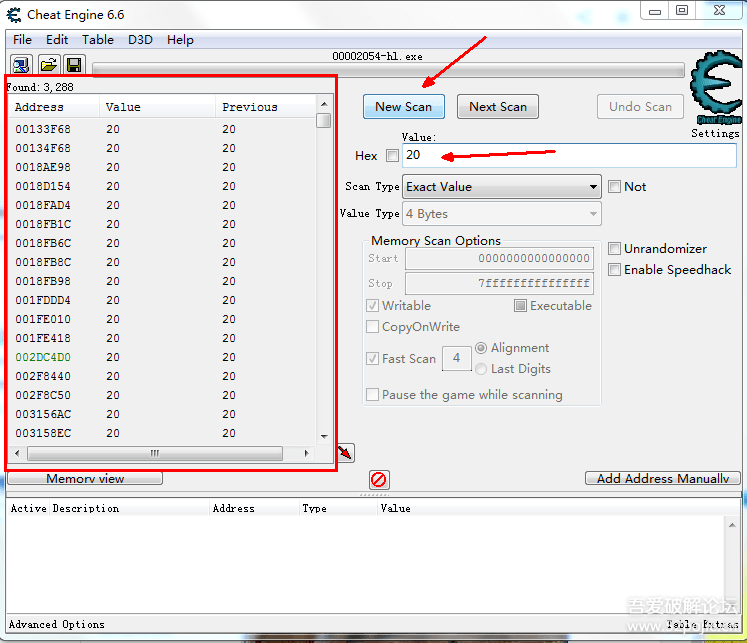
6.这时候我们最好是改变一下这个游戏里的子弹数,更好追踪.我们进游戏,随便开几枪,一枪也行,我这里只打了一枪,所以子弹数为19,所以我在value处填入19.并点击"Next Scan(再次扫描)".就是在原来的结果上,再次扫描.
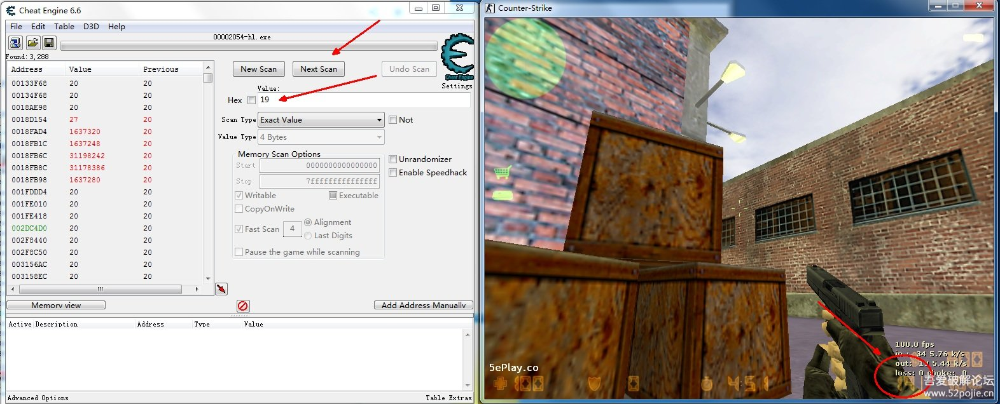
7.你会发现结果一下变少了,变成197
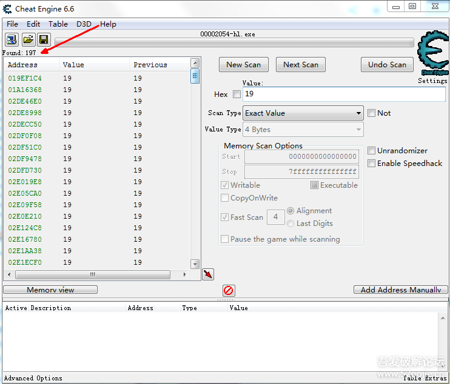
8.可以重复打一枪再来一次扫描
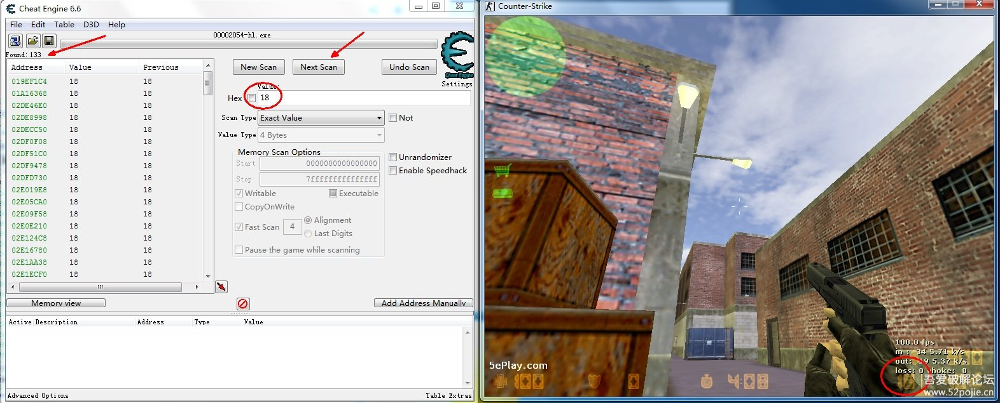
9.结果太多了,我们可以用2分法来进行追踪.点击第一行,然后拖滚动条到中间位置,按着Shift键,再点击一行,然后在选定的这批地址上,右键,点击"Change value of selected addresses"(修改这些地址中的值).我们尝试批量修改值,看看是不是在这些地址里面.

10.我们改成33(尝试期间,建议别改太夸张,影响查找),然后点击ok
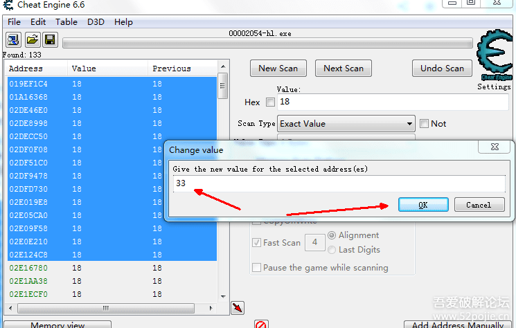
11.来到游戏,你发现值改了.你可以尝试着开一枪看看.
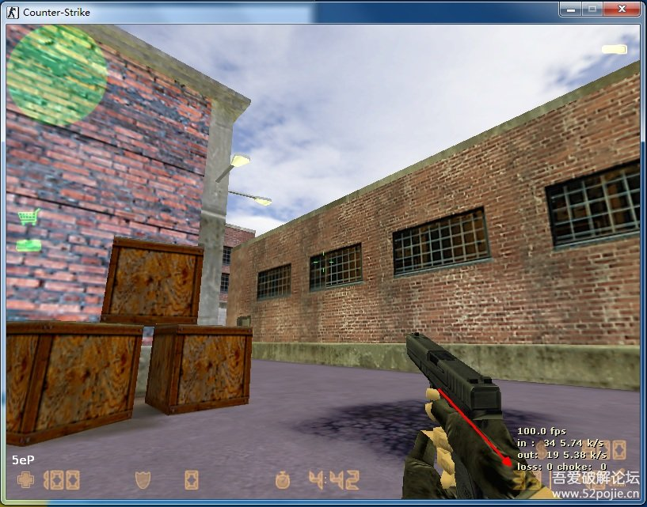
12.结果发现值不是减1,那么这是证明上面这一堆地址,只是显示的地址,不是真正存放子弹数的地址(柜A).
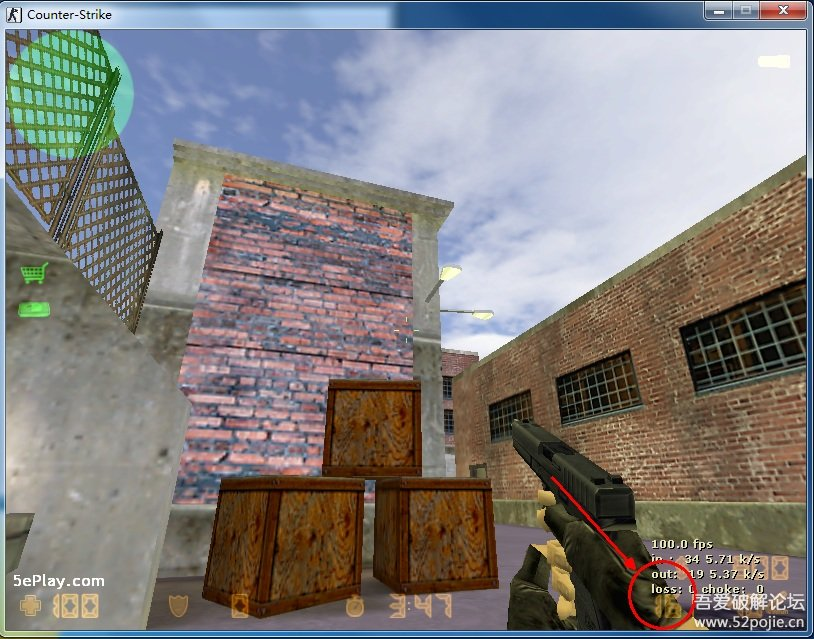
13.那么我们把剩下的地址,再分为2,选取一半,进行批量修改.
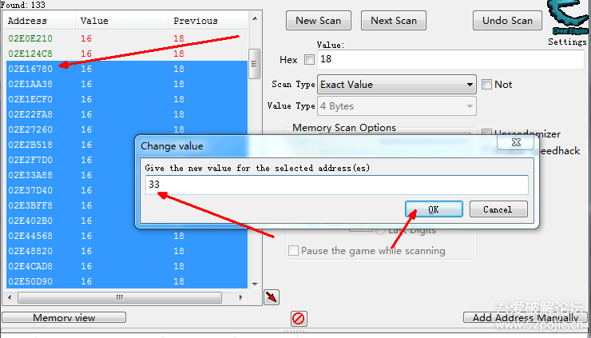
14.重复上面的步骤,最后你会锁定在"05627E34"这个地址上.并确定在游戏里开枪后,确实是你修改的子弹数.需要注意的是,每一局游戏的开始,意味着这些地址都有可能变了,不再是"05627E34",所以找这个关键地址(柜A)一定要快.可以设置游戏时间长一点.
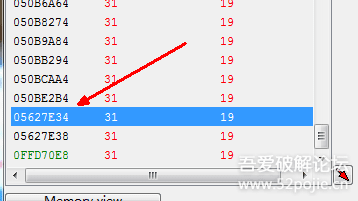
15.这里我改成了77,并且进游戏开了一枪,得以确认就是这个地址.
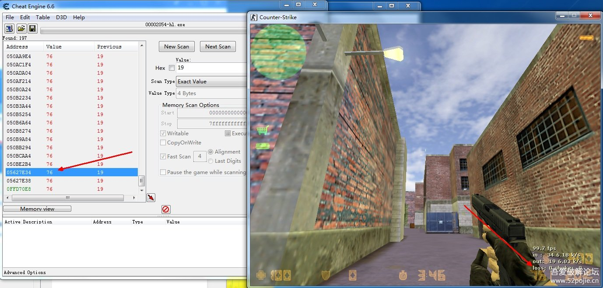
16.然后你可以通过CE锁定这个值,让他一直不变.或者更暴力一点,修改游戏代码,让他增加,而不是减少.下面我两种方法都说一下.
右键这个地址(柜A),添加到已选的地址列表(Add selected addresses to the addresslist)
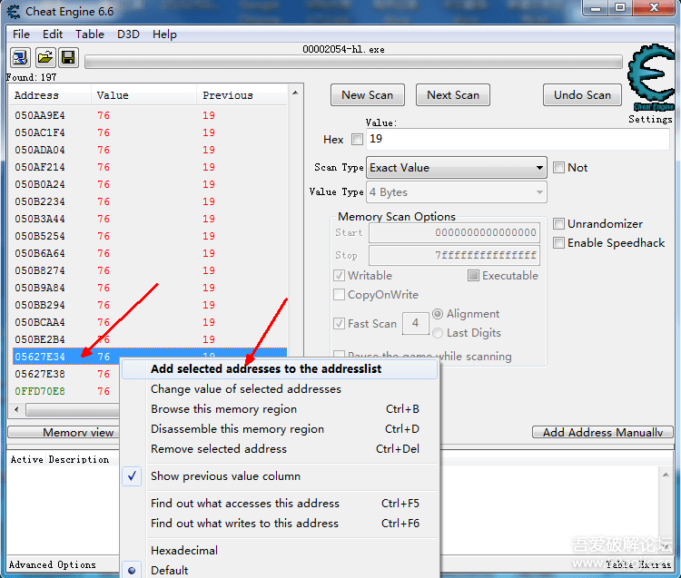
17.点击一下这个框框,表示激活锁定值内容.
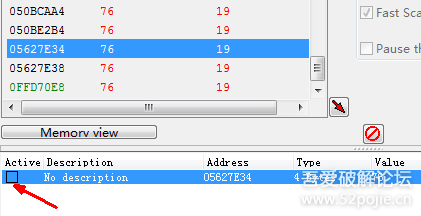
18.变成X了之后,进游戏,随便你开枪了
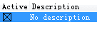
19.想改数量,双击这里(value下面的数值)就可以改了
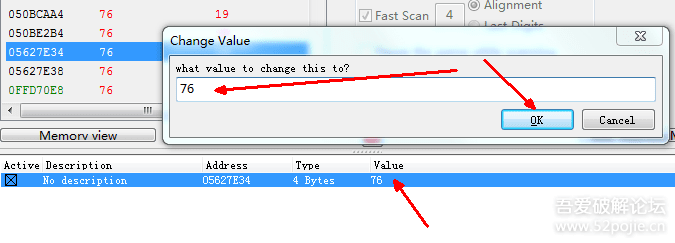
20.下面我们来说更暴力的,我们来追踪是哪些代码修改这个地址(柜A)的值.对这些代码进行更改,达到子弹增加的目的.
右键这个地址.“Find out what writes to this address(查找谁写入这个地址)”
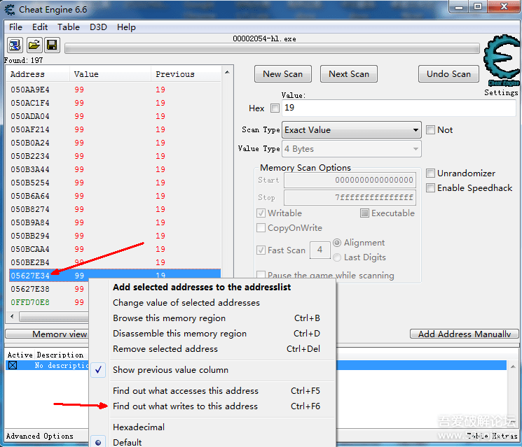
21.一个询问是否调试程序,点击"Yes"
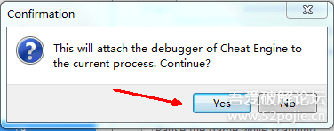
22.出现这么一个窗口后,就是已经在跟踪程序了,谁写入这个地址(柜A),就会显示出来.
这里我们需要回到游戏,去开一枪.地址(柜A)变化了,我们就有数据了
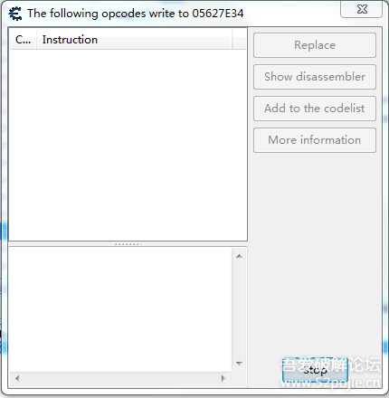
23.点击这个显示出来的地址,可以看到这段代码的部分内容.我们可以点击"Show disassembler(显示反编译)"查看更多.
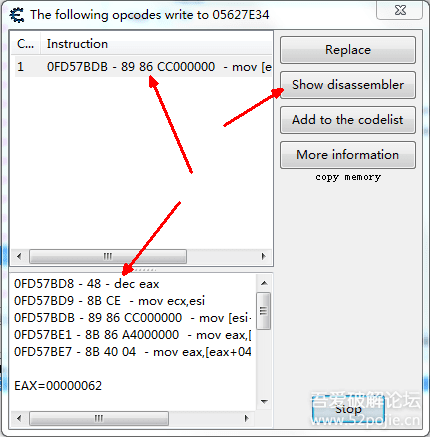
24.这个eax就是子弹的数量,是上面自减1之后,再写入到地址(柜A)的.
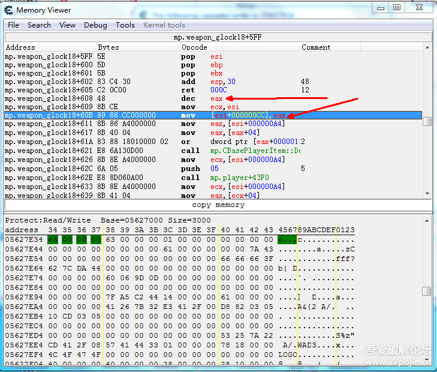
25.我们直接把他改成增加.双击这一行"dec eax",然后改成"inc eax"点击ok
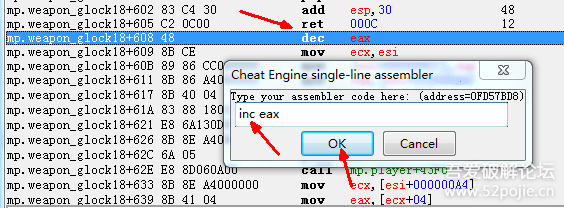
26.回到游戏开枪吧.子弹是开一枪,加一颗了.
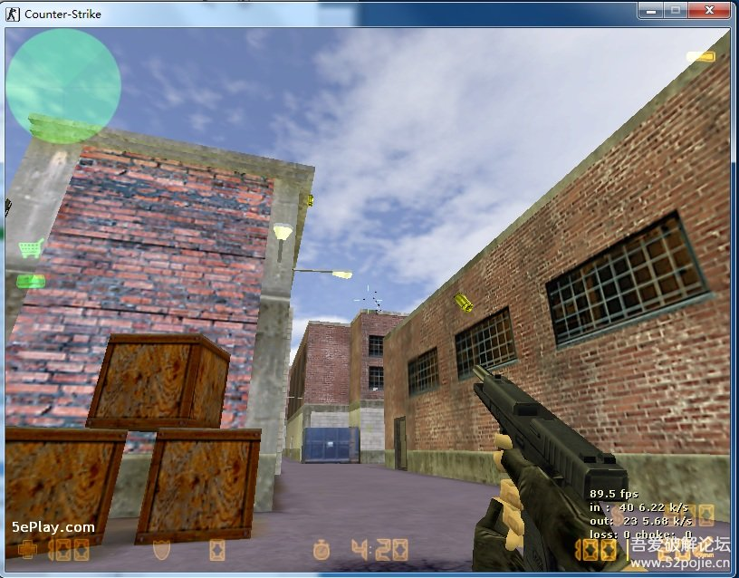
27.完成了匪枪的修改.
其他枪支,需要重新做追踪.不同的枪支,地址(储物柜)是不一样的.
点击"New Scan(新的扫描)",重新扫其他的吧.
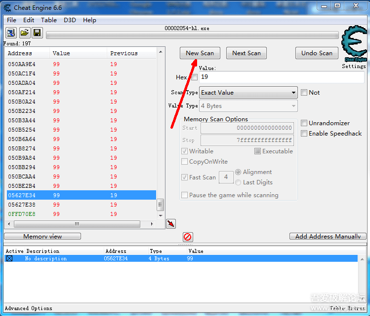